Індивідуальні заняття кундаліні йоги
Онлайн та наживо в Києві — простір глибокої роботи з тілом, станом та внутрішньою опорою.
Я, Іра Рахубінська - сертифікований вчитель Кундаліні йоги,
провідник какао церемоній, організаторка ретритів та йога подорожей
по Україні.
Засновниця проєкту «Голос Серця» — зустрічі, що створюють більше.
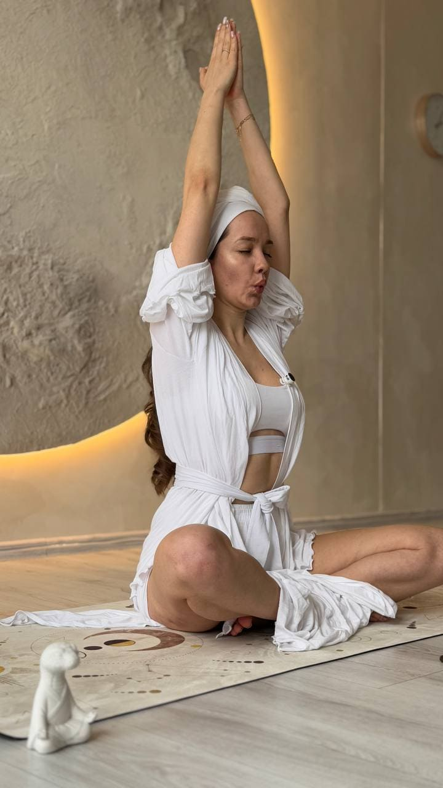
В далекому 2023 я прийшла на своє перше заняття з кундаліні йоги і
чесно зізнаюся я одразу відчула, що це саме МІЙ інструмент глибинної
роботи над собою.
Тоді я була виснажена роботою в офісі Британської туристичної
компанії і шукала спокійну гавань, де зможу відновлюватися та
повертати собі себе хоча б раз в тиждень. Щосуботи я бігла на
заняття о 8 ранку після виснажливого тижня з таким ентузіазмом, що
здавалося вся втома зникала від однієї думки, що на мене чекає йога.
Згодом я відчула, що хочу частіше практикувати, додала вечірні
заняття в будні дні. А через 4 місяці регулярних практик я пішла
навчатися на вчителя кундаліні йоги.
Ще один глибинний відгук в мене стався будучи вагітною. В
жовтні 2025 року на жіночому колі я відкрила для себе церемоніальне
какао.
Здобула сертифікацію 1 рівня в Kundalini Research Institute
Проводила групові заняття онлайн та в студіях в Києві
Проводила ретрити з кундаліні йоги та виїзні йога подорожі до місць сили в Україні
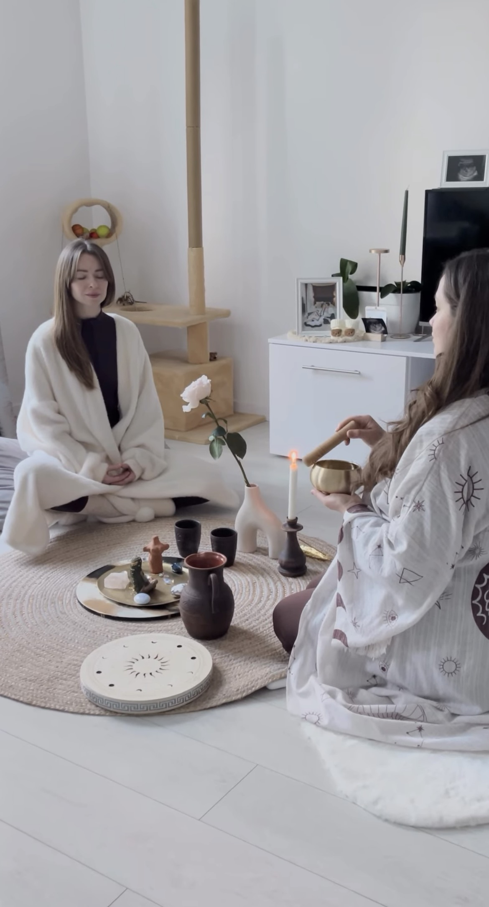
Ще один глибинний відгук в мене стався на жіночому колі в жовтні 2025 року під час вагітності, де я відкрила для себе церемоніальне какао.
Ця цілюща рослина розкрила моє серце. І я знову пішла в навчання, щоб якомога більше людей могли відчути силу саме високовібраційного какао.
Адже це не просто какао до якого ми звикли в кавʼярні. Спробувавши один раз, ви більше ніколи не будете пити Несквік 😁
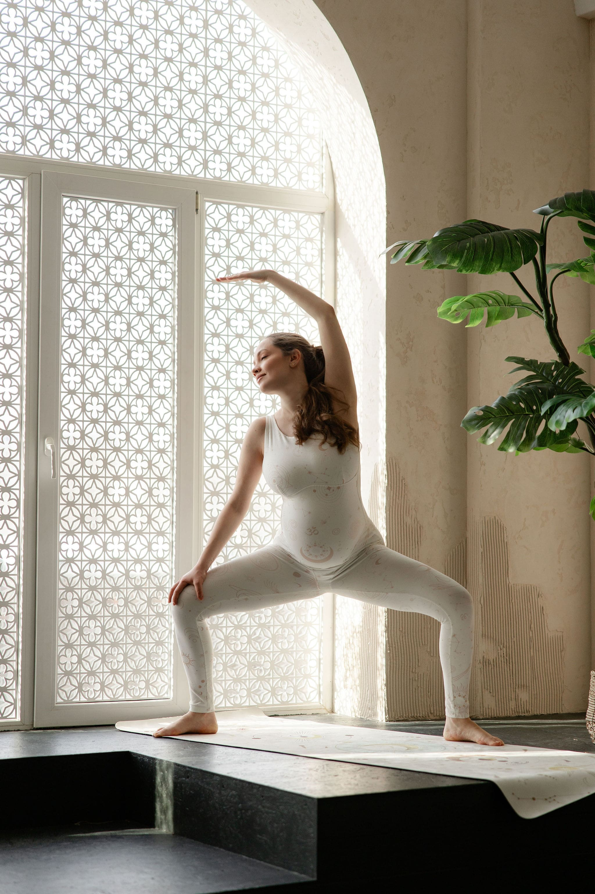
Онлайн та наживо в Києві — простір глибокої роботи з тілом, станом та внутрішньою опорою.
Регулярні практики онлайн у м’якому полі підтримки, дисципліни та контакту із собою.
Практики для співробітників в офісі або на виїзній локації для відновлення ресурсу команди.
Індивідуальна, групова або для пари — як шлях до відкритого серця та глибшого контакту.
Йога-подорожі до місць сили, де можна сповільнитися, видихнути та повернутися до себе.
Дбайливі практики через м’якість, дихання, тіло та уважне проживання нового етапу.
Індивідуальний підхід до кожного учня навіть якщо ви займаєтеся в групі
Практикувати із зусиллям, але без насилля над собою
Ми те що ми випромінюємо
Йога це стиль життя, а не лише 1,5 години на килимку
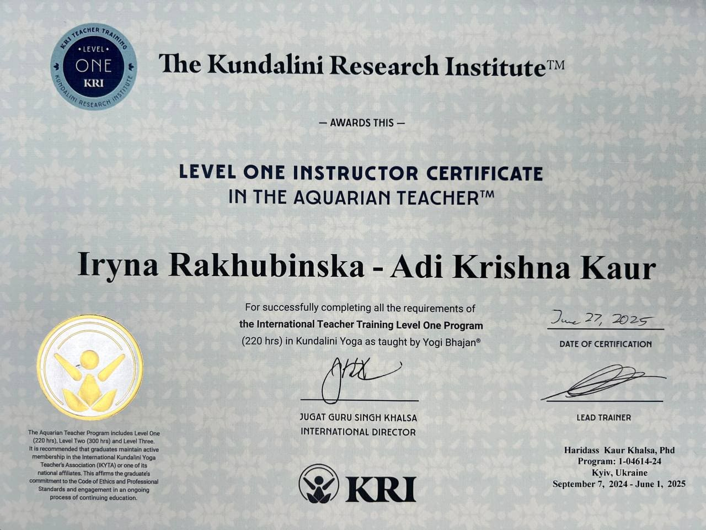
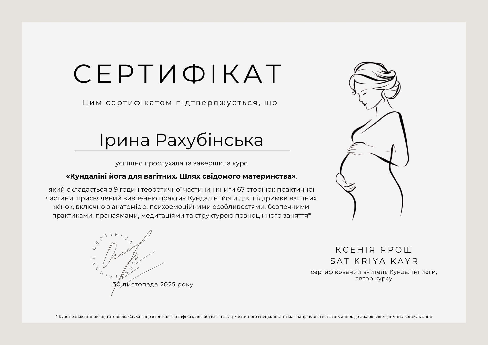
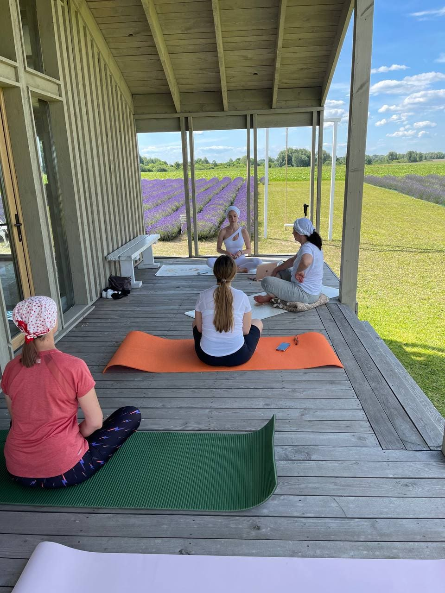
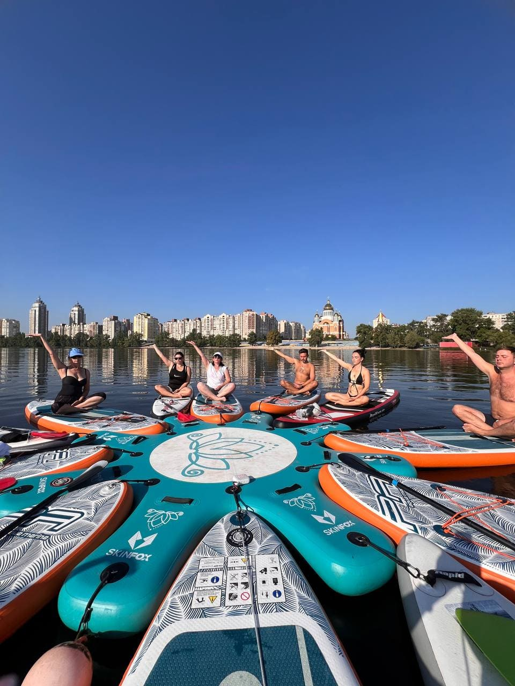
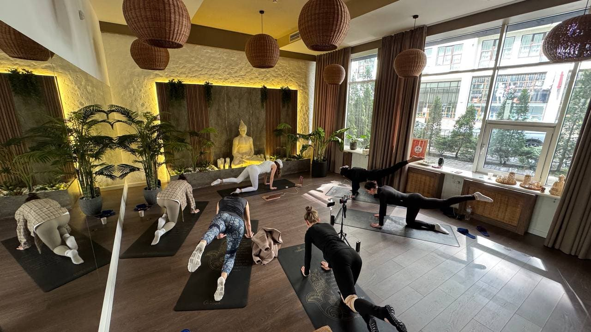
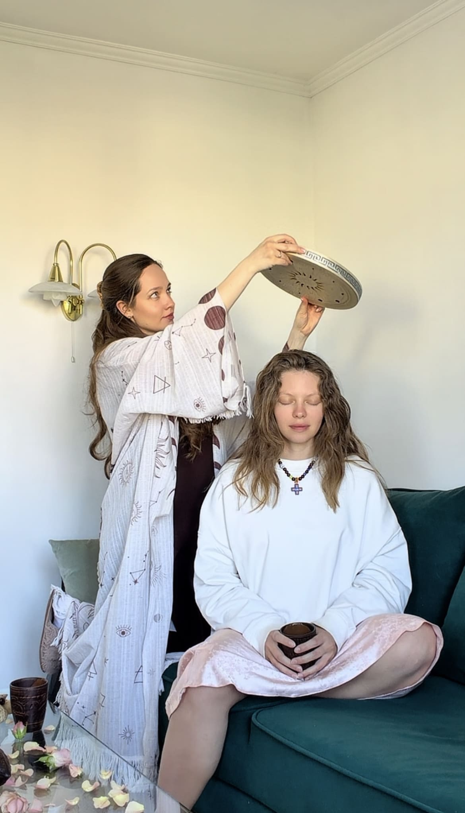
Кожна практика — це простір,
де люди повертаються до себе
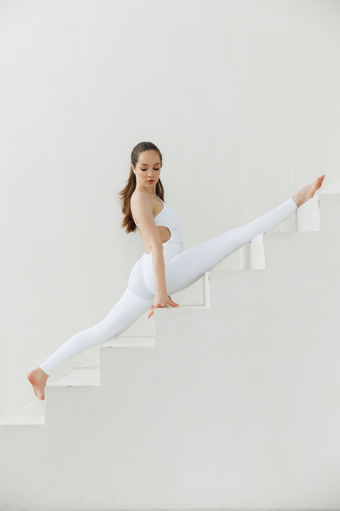
Оберіть формат практики, який відгукується вашому стану, темпу та запиту.
Залиште короткий запит — і я звʼяжусь з вами, щоб підібрати формат практики або події.
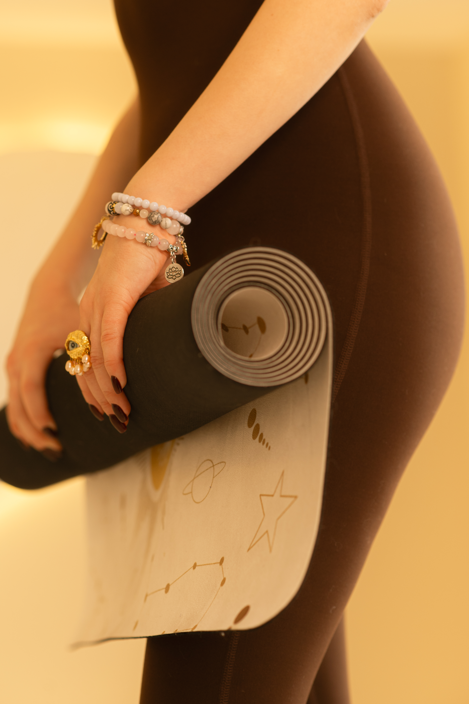
Оберіть зручний спосіб звʼязку